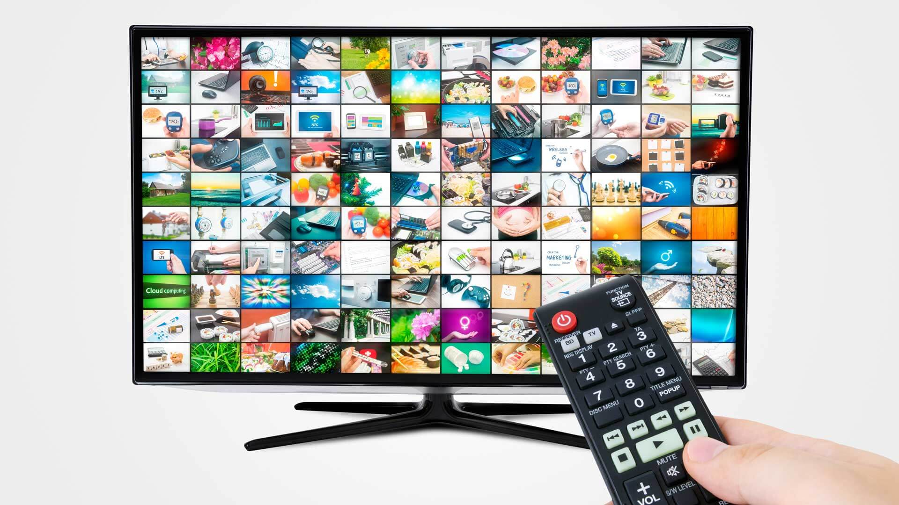
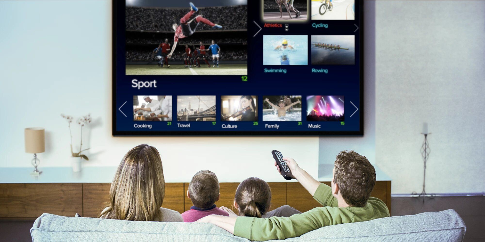

|  |
This article is about television as a medium. For the appliance itself, see television set. For other uses, see Television (disambiguation).
"TV" redirects here. For other uses, see TV (disambiguation).
Television became available in crude experimental forms in the late 1920s, but only after several years of further development was the new technology marketed to consumers. After World War II, an improved form of black-and-white television broadcasting became popular in the United Kingdom and the United States, and television sets became commonplace in homes, businesses, and institutions. During the 1950s, television was the primary medium for influencing public opinion.[1] In the mid-1960s, color broadcasting was introduced in the U.S. and most other developed countries.
Television became available in crude experimental forms in the late 1920s, but only after several years of further development was the new technology marketed to consumers. After World War II, an improved form of black-and-white television broadcasting became popular in the United Kingdom and the United States, and television sets became commonplace in homes, businesses, and institutions. During the 1950s, television was the primary medium for influencing public opinion.[1] In the mid-1960s, color broadcasting was introduced in the U.S. and most other developed countries.
